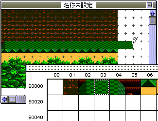
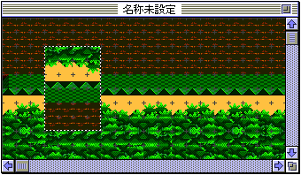
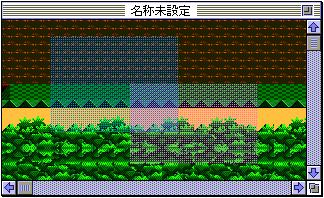
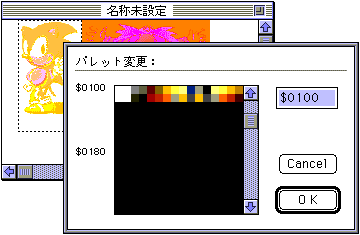
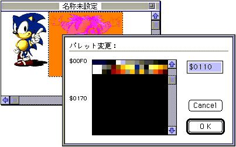
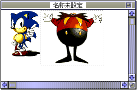

★Graphic Tools Guide
★MAP/SCREENエディタユーザーズマニュアル
★Graphic Tools Guide
★MAP/SCREENエディタユーザーズマニュアル
▲
戻る｜
進む▼
MAP/SCREENエディタユーザーズマニュアル
■マップの編集
- キャラクタデータはテンプレート上に配置されます。これを指定し、鉛筆ツール・長方形ツールでマップ上に配置します。

- テンプレート上の複数のキャラクタをドラッグによって一括選択し、マップウインドウへ配置することも可能です。
- また、マップウインドウ上で長方形選択ツール・選択ツールで範囲を指定し、Copy＆Paste、配置変更、或いはFlagメニューとの組み合わせで各種フラグ設定を行います。
- インポートされたイメージデータをそのままマップに反映させたい場合は、イメージデータをCGウィンドウへキャラクタ登録し、更にそのままCGウィンドウでデータをコピーしてマップウィンドウにペーストしてください。
あらかじめ、このような手順を踏んだ後にキャラクタのソート等を実行することで、ソートによってバラバラになったキャラクタを組み直すといった手間がある程度軽減されます。
- ●H反転、V反転
- 選択した範囲のマップデータの配置変更および、H/V反転フラグの設定、解除を行います。
フラグが設定されたマップデータはその設定内容に従って反転表示されます。

- ●特殊プライオリティ、特殊カラー演算
- 選択した範囲の特殊プライオリティ、特殊カラー演算フラグの設定、解除を行います。
なお、オプションメニューの「表示」にそれぞれの設定結果を表示するモードが用意されています。

- ※青：特殊プライオリティ設定部分／赤：特殊カラー演算フラグ設定部分
- ●パレット...
- マップデータに対して各キャラクタ単位でパレットを割り当てます。
マップウィンドウで範囲を指定した後、イメージメニューの「パレット...」を指定すると、パレット変更用のダイアログが表示されます。
パレットの先頭アドレスを数値入力するか、もしくはパレットリストの該当部分をクリックして変更するパレットを選択してください。
 |
 |
↓ |
|---|
 |
- ※選択出来るアドレスの単位（$10/$100）は初期設定時のカラーモードによって決定します。
▲
戻る｜
進む▼
★Graphic Tools Guide
★MAP/SCREENエディタユーザーズマニュアル
Copyright SEGA ENTERPRISES, LTD., 1997